문서 변환 3단 예시
대표 문서 6종에서 표지와 본문·후반부 페이지를 함께 선정했습니다. 각 페이지는 원본, 감지·레이아웃 결과, Markdown 변환 결과를 같은 구성으로 제공합니다.
문서유형 대표
1. 정책연구 · 1989
p.1


3. Markdown 변환 결과
 wf究報告 89-14 # 中國의 科學技術政策 
p.116
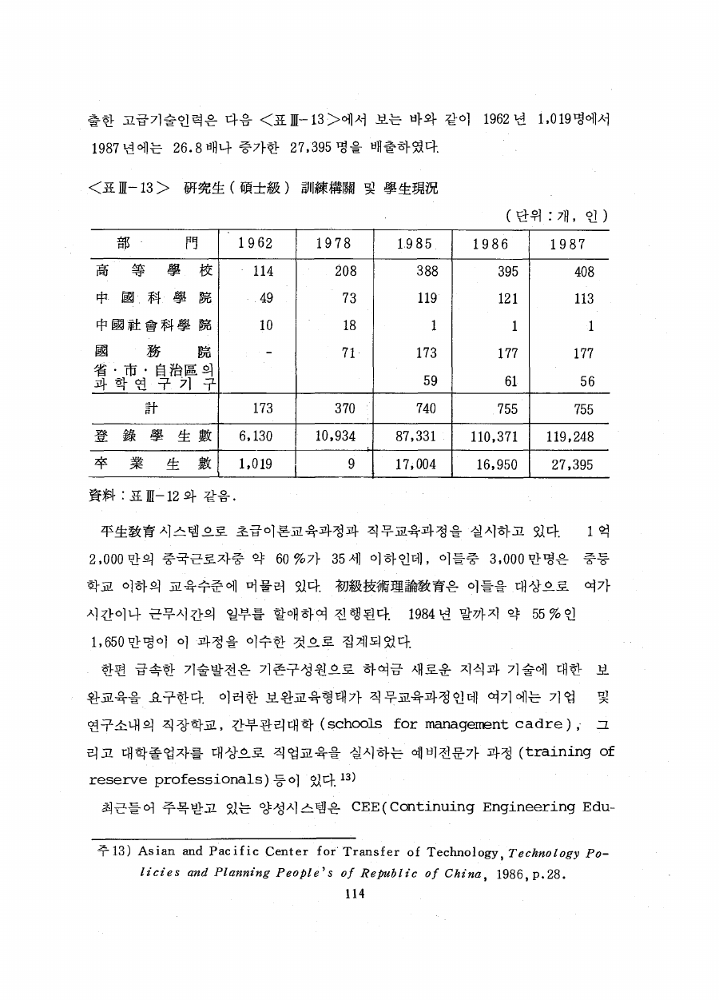
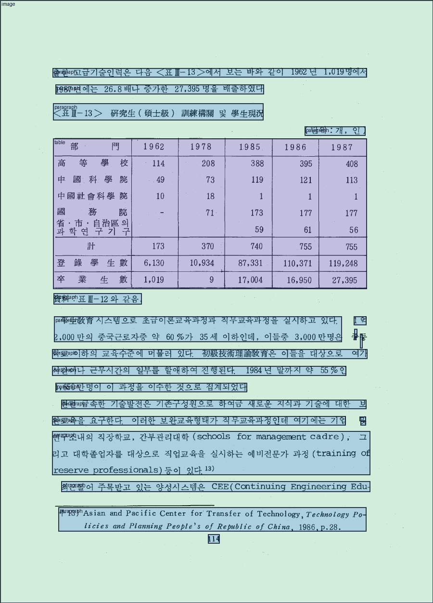
3. Markdown 변환 결과
 출한 고급기술인력은 다음 <표ßI-13>에서 보는 바와 같이 1962 년 1.019 명에서 1987 년 에는 26.8 배나 증가한 27.395 명 을 배출하였다. <표ßI-13> 짧究生 ( 碩士級 ) 힘"練構關 및 學生現況 (단위:개， 인) |部 門|1962|1978|1985|1986|1987| |---|---|---|---|---|---| |高 等 學 校 中 國 科 學 院 中國社會科學 院 國 務 院<br><br>省과 • 市 · 自구治기區의<br><br>학연 구|114 49 10|208 73 18 71|388 119<br><br>173 59|395 121<br><br>177 61|408 113<br><br>177 56| |計|173|370|740|755|755| |登 錄 學 生數|6.130|10.934|87.331|110.371|119.248| |후 業 生 數|1,019|9|17.004|16.950|27.395| 資料 : 표 ßI-12 와 같음. zp:生敎育시스템으로 초급이론교육과정과 직무교육과정을 실시하고 있다. 2.000 만의 중국근로자중 약 60 %가 35 세 이하인데 , 이들중 3.000 만명은 1 억 z } 특 AU ] 학교 이하의 교육수준에 머물러 있다. 初級技術理論敎育은 이들을 대상으로 여가 시간이나 근무시간의 일부를 할애하여 진행된다 1984 년 말까지 약 55 %인 1.650 만명이 이 과정을 이수한 것으로 집계되었다. 한편 급속한 기술발전은 기존구성원으로 하여금 새로운 지식과 기술에 대한 보 완교육을 요구한다. 이러한 보완교육형태가 직무교육과정인데 여기에는 기업 디1 7< 연구소내의 직장학교， 간부관리대학 (schools for management cadre) . 그 리고 대학졸업자를 대상으로 직업교육을 실시하는 예비전문가 과정 (training of reserve professionals) 등 이 있다. 13) 최근들어 주목받고 있는 양성시스템은 CEE(Continuing Engineering Edu- 주 13) Asian 때d Pac ific Center for' Transfer of Technology, Techηology Polz'cies and Plaηnz'ηg PeoPle ’s of Repμblt'c of Chz'ηa， 1986,p.28. 114
p.232
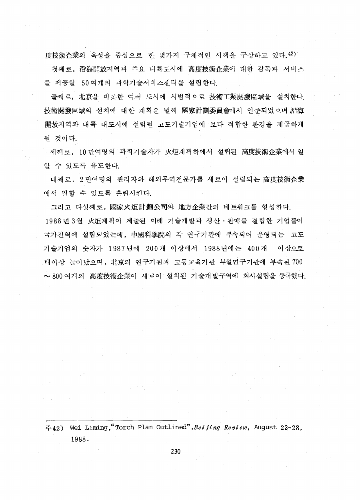
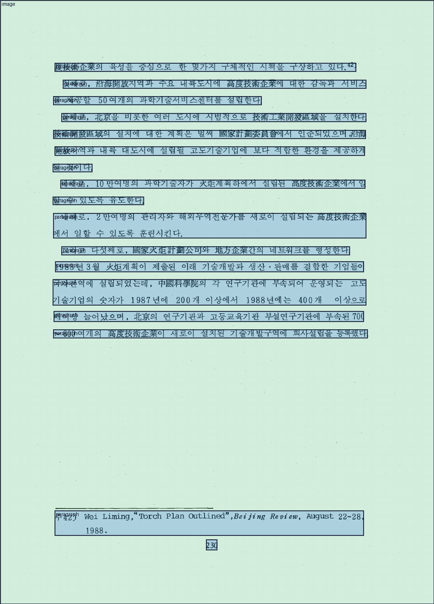
3. Markdown 변환 결과
 度技術企業의 육성을 중심으로 한 몇가지 구체적인 시책을 구상하고 있다 42) 첫째로， 땀海開放지역과 주요 내륙도시에 高度技術企業에 대한 감독과 서비스 를 제공할 50 여개의 과학기술서비스센터를 설립한다. 둘째로， 北京을 비롯한 여러 도시에 시범적으로 技術工業開聲區域을 설치한다. 技術開鍵區域의 설치에 대한 계획은 벌써 國家計劃委員會에서 인준되었으며，땀海 開放지역과 내륙 대도시에 설립될 고도기술기업에 보다 적합한 환경을 제공하게 될 것이다. 세째로. 10 만여명의 과학기술자가 火필계획하에서 설립된 高度技術企業에서 일 할 수 있도록 유도한다. 네째로. 2 만여명의 관리자와 해외무역전문가를 새로이 설립되는 高度技術企業 에서 일할 수 있도록 훈련시킨다. 그리고 다섯째로， 國家火필計劃公司와 地方企業간의 네트워크를 형성한다. 1988 년 3 월 火姐계획이 제출된 이래 기술개발과 생산 · 판매를 결합한 기업들이 국가전역에 설립되었는데， 中國科學院의 각 연구기관에 부속되어 운영되는 고도 기술기업의 숫자가 1987 년에 200 개 이상에서 1988 년에는 400 개 이상으로 배이상 늘어났으며 , 北京의 연구기관과 고등교육기관 부절연구기관에 부속된 700 rv 800 여개의 高度技術企業이 새로이 설치된 기술개발구역에 회사설립을 등록했다. 주42) Wei Liming,“Torch Plan OUtlined" .Bei jing Review, August 22-28, 1988. 230
문서유형 대표
5. 수탁연구 · 1999
p.1

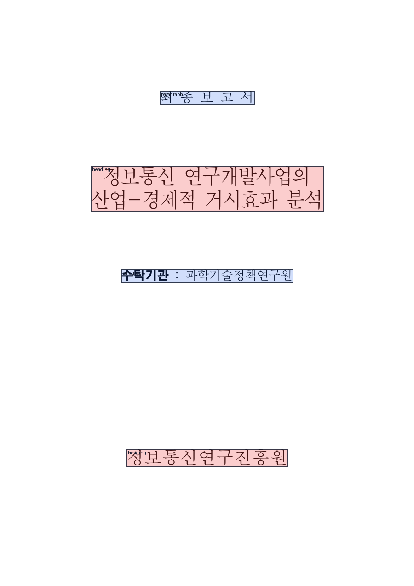
3. Markdown 변환 결과
최 종 보 고 서 # 정보통신 연구개발사업의 산업-경제적 거시효과 분석 수탁기관 : 과학기술정책연구원 ## 정보통신연구진흥원
p.86
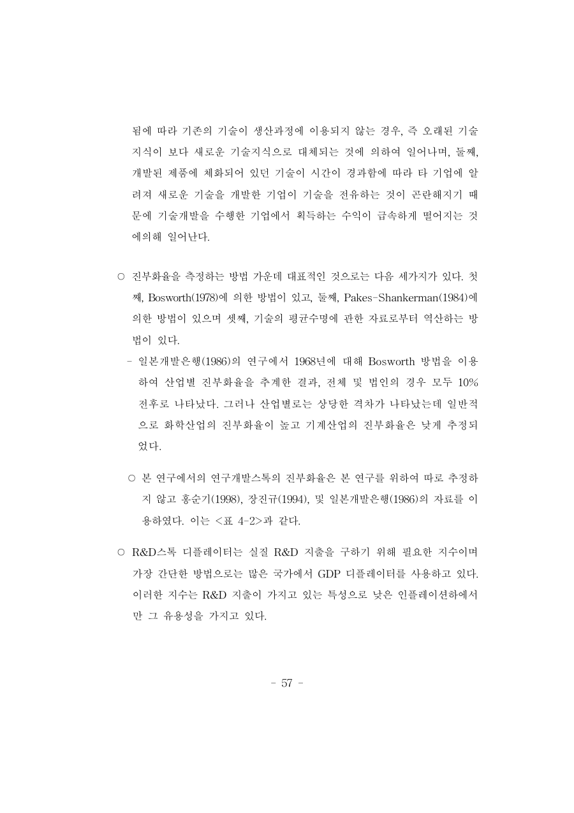
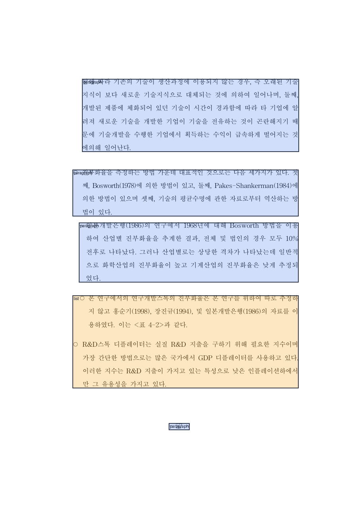
3. Markdown 변환 결과
됨에 따라 기존의 기술이 생산과정에 이용되지 않는 경우, 즉 오래된 기술 지식이 보다 새로운 기술지식으로 대체되는 것에 의하여 일어나며, 둘째, 개발된 제품에 체화되어 있던 기술이 시간이 경과함에 따라 타 기업에 알 려져 새로운 기술을 개발한 기업이 기술을 전유하는 것이 곤란해지기 때 문에 기술개발을 수행한 기업에서 획득하는 수익이 급속하게 떨어지는 것 에의해 일어난다. ○ 진부화율을 측정하는 방법 가운데 대표적인 것으로는 다음 세가지가 있다. 첫 째, Bosworth(1978)에 의한 방법이 있고, 둘째, Pakes-Shankerman(1984)에 의한 방법이 있으며 셋째, 기술의 평균수명에 관한 자료로부터 역산하는 방 법이 있다. - 일본개발은행(1986)의 연구에서 1968년에 대해 Bosworth 방법을 이용 하여 산업별 진부화율을 추계한 결과, 전체 및 법인의 경우 모두 10% 전후로 나타났다. 그러나 산업별로는 상당한 격차가 나타났는데 일반적 으로 화학산업의 진부화율이 높고 기계산업의 진부화율은 낮게 추정되 었다. - 본 연구에서의 연구개발스톡의 진부화율은 본 연구를 위하여 따로 추정하 지 않고 홍순기(1998), 장진규(1994), 및 일본개발은행(1986)의 자료를 이 용하였다. 이는 <표 4-2>과 같다. - R&D스톡 디플레이터는 실질 R&D 지출을 구하기 위해 필요한 지수이며 가장 간단한 방법으로는 많은 국가에서 GDP 디플레이터를 사용하고 있다. 이러한 지수는 R&D 지출이 가지고 있는 특성으로 낮은 인플레이션하에서 만 그 유용성을 가지고 있다. - 57 -
p.171
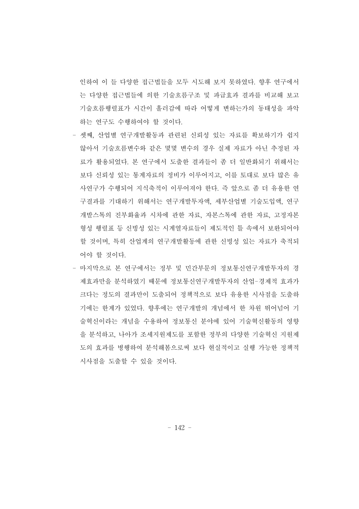
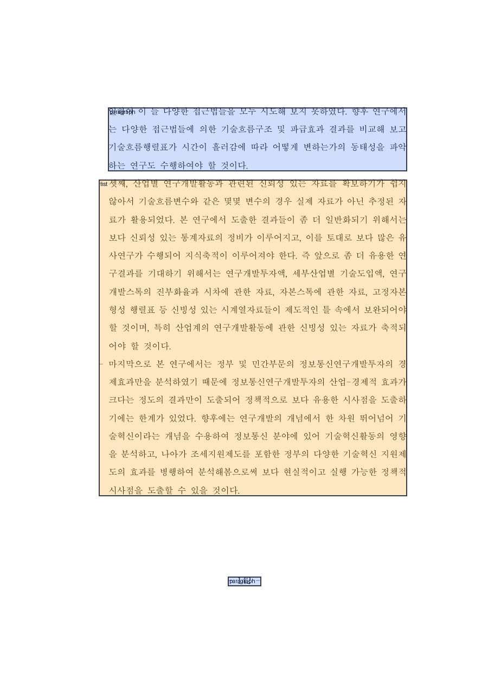
3. Markdown 변환 결과
인하여 이 들 다양한 접근법들을 모두 시도해 보지 못하였다. 향후 연구에서 는 다양한 접근법들에 의한 기술흐름구조 및 파급효과 결과를 비교해 보고 기술흐름행렬표가 시간이 흘러감에 따라 어떻게 변하는가의 동태성을 파악 하는 연구도 수행하여야 할 것이다. - 셋째, 산업별 연구개발활동과 관련된 신뢰성 있는 자료를 확보하기가 쉽지 않아서 기술흐름변수와 같은 몇몇 변수의 경우 실제 자료가 아닌 추정된 자 료가 활용되었다. 본 연구에서 도출한 결과들이 좀 더 일반화되기 위해서는 보다 신뢰성 있는 통계자료의 정비가 이루어지고, 이를 토대로 보다 많은 유 사연구가 수행되어 지식축적이 이루어져야 한다. 즉 앞으로 좀 더 유용한 연 구결과를 기대하기 위해서는 연구개발투자액, 세부산업별 기술도입액, 연구 개발스톡의 진부화율과 시차에 관한 자료, 자본스톡에 관한 자료, 고정자본 형성 행렬표 등 신빙성 있는 시계열자료들이 제도적인 틀 속에서 보완되어야 할 것이며, 특히 산업계의 연구개발활동에 관한 신빙성 있는 자료가 축적되 어야 할 것이다. - 마지막으로 본 연구에서는 정부 및 민간부문의 정보통신연구개발투자의 경 제효과만을 분석하였기 때문에 정보통신연구개발투자의 산업-경제적 효과가 크다는 정도의 결과만이 도출되어 정책적으로 보다 유용한 시사점을 도출하 기에는 한계가 있었다. 향후에는 연구개발의 개념에서 한 차원 뛰어넘어 기 술혁신이라는 개념을 수용하여 정보통신 분야에 있어 기술혁신활동의 영향 을 분석하고, 나아가 조세지원제도를 포함한 정부의 다양한 기술혁신 지원제 도의 효과를 병행하여 분석해봄으로써 보다 현실적이고 실행 가능한 정책적 시사점을 도출할 수 있을 것이다. - 142 -
문서유형 대표
8. 과학기술정책 Brief · 2022
p.1


3. Markdown 변환 결과
 Vol. 2 2022. 12. 28. # 사회문제 대응을 위한 통합적 연구개발정책 • 서지영 선임연구위원  ## 실효성 있는 사회문제해결과 과학적 근거기반의 사회혁신 전략 수립을 위해서는 과학·기술·인문·사회를 아우르는 과학기술 연구개발정책으로 전환하여, 문제중심의 통합적 연구개발 프로그램을 추진해야 함  ### 실효성 있는 사회문제 대응방안 마련을 위해서는 모든 분과 학문을 포괄하는 통합적 연구 개발지원 패러다임으로 전환 필요 #### l 과학기술 연구개발 지원정책에서 단기적 사회문제 해소를 위한 기술개발 및 사업화 지원은 점차 비중이 확대되고 있으나, 아직 실용화 성과가 부진하고, 장기적 시스템 전환을 위한 연구개발은 ‘과학기술 연구개발’ 의 범주에 들어오지 못하고 있는 상황 - 기후변화, 고령화 등의 거시적 변화에 대응하기 위해서는 단기적으로는 부정적 영향을 최소화 하고, 장기적 으로는 변화된 환경에 적합한 경제·사회시스템을 만들어 가야 할 필요가 있음 l 기술적 해법의 실용화를 위해서는 사회적 수용성 제고가 필요하며, 연구개발 과정에서 기술적 지식과 사회적 수요에 대한 지식이 결합되어야 함 l 과학·기술 연구개발 성과가 시스템전환의 동력으로 작동하기 위해서는 미래사회 비전과 사회구성원의 인식, 행동양식에 대한 지식이 결합되어야 함 l 디지털 사회로 발전해 가고 있는 가운데 모든 학문 분야에서 데이터 공유에 기반한 다양한 해법이 협력적으로 모색될 수 있도록 지원할 필요가 있음 SCIENCE AND TECHNOLOGY POLICY INSTITUTE 1
p.2
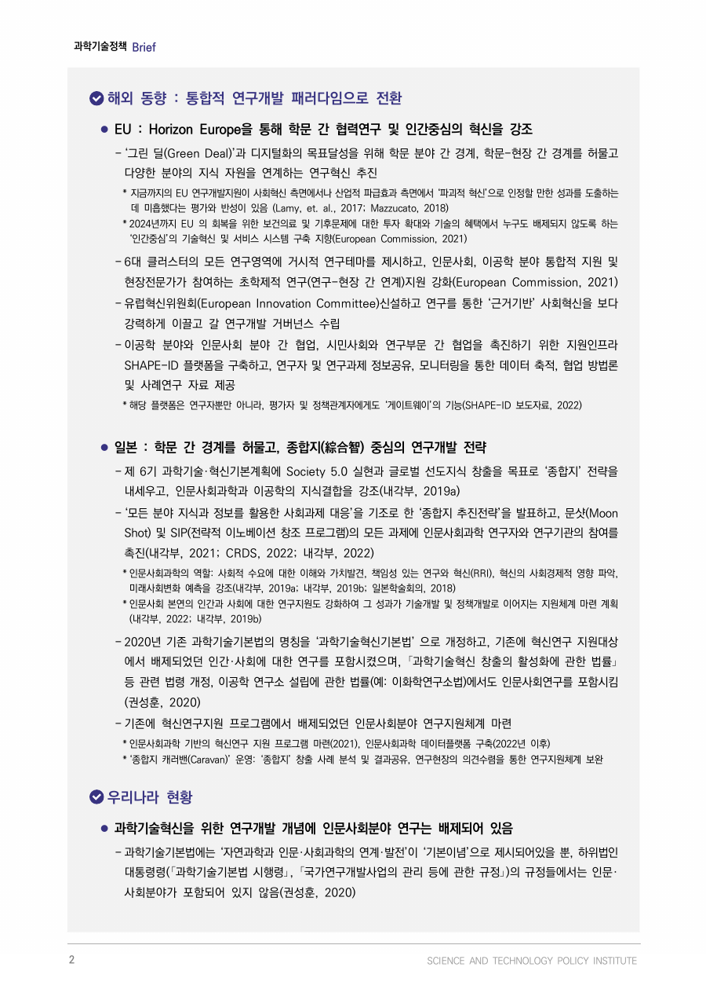
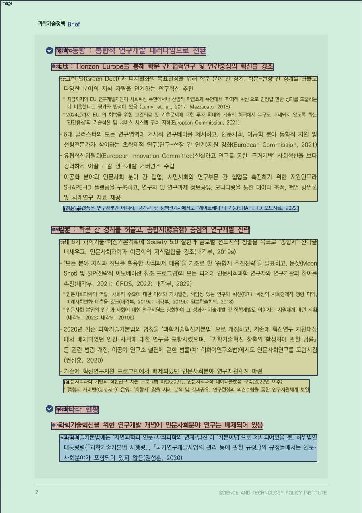
3. Markdown 변환 결과
 ### 해외 동향 : 통합적 연구개발 패러다임으로 전환 #### l EU : Horizon Europe을 통해 학문 간 협력연구 및 인간중심의 혁신을 강조 - ‘그린 딜(Green Deal)’과 디지털화의 목표달성을 위해 학문 분야 간 경계, 학문-현장 간 경계를 허물고 다양한 분야의 지식 자원을 연계하는 연구혁신 추진 - 지금까지의 EU 연구개발지원이 사회혁신 측면에서나 산업적 파급효과 측면에서 ‘파괴적 혁신’으로 인정할 만한 성과를 도출하는 데 미흡했다는 평가와 반성이 있음 (Lamy, et. al., 2017; Mazzucato, 2018) - 2024년까지 EU 의 회복을 위한 보건의료 및 기후문제에 대한 투자 확대와 기술의 혜택에서 누구도 배제되지 않도록 하는 ‘인간중심’의 기술혁신 및 서비스 시스템 구축 지향(European Commission, 2021) - 6대 클러스터의 모든 연구영역에 거시적 연구테마를 제시하고, 인문사회, 이공학 분야 통합적 지원 및 현장전문가가 참여하는 초학제적 연구(연구-현장 간 연계)지원 강화(European Commission, 2021) - 유럽혁신위원회(European Innovation Committee)신설하고 연구를 통한 ‘근거기반’ 사회혁신을 보다 강력하게 이끌고 갈 연구개발 거버넌스 수립 - 이공학 분야와 인문사회 분야 간 협업, 시민사회와 연구부문 간 협업을 촉진하기 위한 지원인프라 SHAPE-ID 플랫폼을 구축하고, 연구자 및 연구과제 정보공유, 모니터링을 통한 데이터 축적, 협업 방법론 및 사례연구 자료 제공 * 해당 플랫폼은 연구자뿐만 아니라, 평가자 및 정책관계자에게도 ‘게이트웨이’의 기능(SHAPE-ID 보도자료, 2022) #### l 일본 : 학문 간 경계를 허물고, 종합지(綜合智) 중심의 연구개발 전략 - 제 6기 과학기술·혁신기본계획에 Society 5.0 실현과 글로벌 선도지식 창출을 목표로 ‘종합지’ 전략을 내세우고, 인문사회과학과 이공학의 지식결합을 강조(내각부, 2019a) - ‘모든 분야 지식과 정보를 활용한 사회과제 대응’을 기조로 한 ‘종합지 추진전략’을 발표하고, 문샷(Moon Shot) 및 SIP(전략적 이노베이션 창조 프로그램)의 모든 과제에 인문사회과학 연구자와 연구기관의 참여를 촉진(내각부, 2021; CRDS, 2022; 내각부, 2022) - 인문사회과학의 역할: 사회적 수요에 대한 이해와 가치발견, 책임성 있는 연구와 혁신(RRI), 혁신의 사회경제적 영향 파악, 미래사회변화 예측을 강조(내각부, 2019a; 내각부, 2019b; 일본학술회의, 2018) - 인문사회 본연의 인간과 사회에 대한 연구지원도 강화하여 그 성과가 기술개발 및 정책개발로 이어지는 지원체계 마련 계획 (내각부, 2022; 내각부, 2019b) - 2020년 기존 과학기술기본법의 명칭을 ‘과학기술혁신기본법’ 으로 개정하고, 기존에 혁신연구 지원대상 에서 배제되었던 인간·사회에 대한 연구를 포함시켰으며, ｢과학기술혁신 창출의 활성화에 관한 법률｣ 등 관련 법령 개정, 이공학 연구소 설립에 관한 법률(예: 이화학연구소법)에서도 인문사회연구를 포함시킴 (권성훈, 2020) - 기존에 혁신연구지원 프로그램에서 배제되었던 인문사회분야 연구지원체계 마련 - 인문사회과학 기반의 혁신연구 지원 프로그램 마련(2021), 인문사회과학 데이터플랫폼 구축(2022년 이후) - ‘종합지 캐러밴(Caravan)’ 운영: ‘종합지’ 창출 사례 분석 및 결과공유, 연구현장의 의견수렴을 통한 연구지원체계 보완 ### 우리나라 현황 #### l 과학기술혁신을 위한 연구개발 개념에 인문사회분야 연구는 배제되어 있음 - 과학기술기본법에는 ‘자연과학과 인문·사회과학의 연계·발전’이 ‘기본이념’으로 제시되어있을 뿐, 하위법인 대통령령(｢과학기술기본법 시행령｣, ｢국가연구개발사업의 관리 등에 관한 규정｣)의 규정들에서는 인문· 사회분야가 포함되어 있지 않음(권성훈, 2020)
p.4
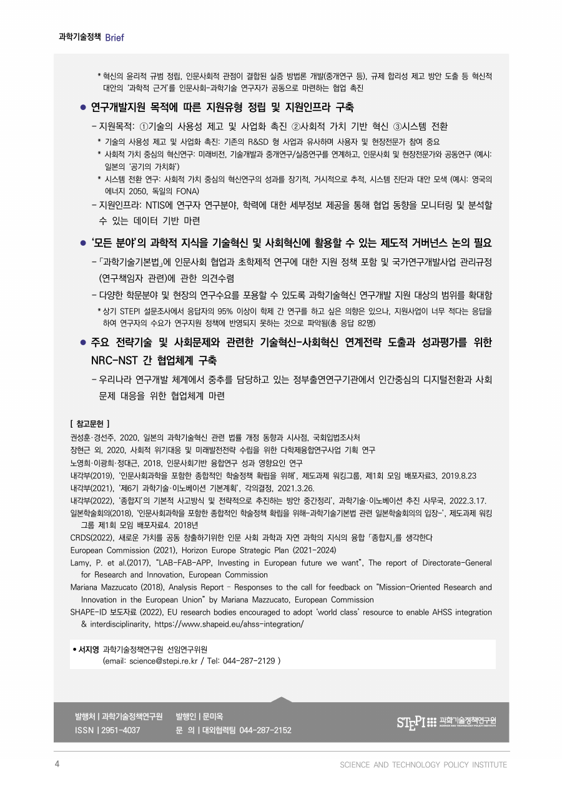
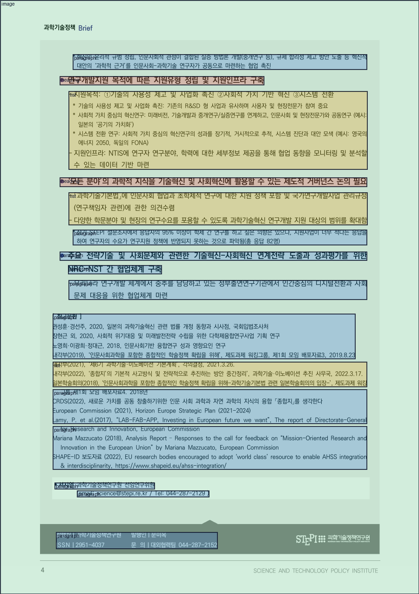
3. Markdown 변환 결과
 * 혁신의 윤리적 규범 정립, 인문사회적 관점이 결합된 실증 방법론 개발(중개연구 등), 규제 합리성 제고 방안 도출 등 혁신적 대안의 ‘과학적 근거’를 인문사회-과학기술 연구자가 공동으로 마련하는 협업 촉진 #### l 연구개발지원 목적에 따른 지원유형 정립 및 지원인프라 구축 - 지원목적: ①기술의 사용성 제고 및 사업화 촉진 ②사회적 가치 기반 혁신 ③시스템 전환 - 기술의 사용성 제고 및 사업화 촉진: 기존의 R&SD 형 사업과 유사하며 사용자 및 현장전문가 참여 중요 - 사회적 가치 중심의 혁신연구: 미래비전, 기술개발과 중개연구/실증연구를 연계하고, 인문사회 및 현장전문가와 공동연구 (예시: 일본의 ‘공기의 가치화’) - 시스템 전환 연구: 사회적 가치 중심의 혁신연구의 성과를 장기적, 거시적으로 추적, 시스템 진단과 대안 모색 (예시: 영국의 에너지 2050, 독일의 FONA) - 지원인프라: NTIS에 연구자 연구분야, 학력에 대한 세부정보 제공을 통해 협업 동향을 모니터링 및 분석할 수 있는 데이터 기반 마련 #### l ‘모든 분야’의 과학적 지식을 기술혁신 및 사회혁신에 활용할 수 있는 제도적 거버넌스 논의 필요 - 「과학기술기본법」에 인문사회 협업과 초학제적 연구에 대한 지원 정책 포함 및 국가연구개발사업 관리규정 (연구책임자 관련)에 관한 의견수렴 - 다양한 학문분야 및 현장의 연구수요를 포용할 수 있도록 과학기술혁신 연구개발 지원 대상의 범위를 확대함 * 상기 STEPI 설문조사에서 응답자의 95% 이상이 학제 간 연구를 하고 싶은 의향은 있으나, 지원사업이 너무 적다는 응답을 하여 연구자의 수요가 연구지원 정책에 반영되지 못하는 것으로 파악됨(총 응답 82명) l 주요 전략기술 및 사회문제와 관련한 기술혁신-사회혁신 연계전략 도출과 성과평가를 위한 NRC-NST 간 협업체계 구축 - 우리나라 연구개발 체계에서 중추를 담당하고 있는 정부출연연구기관에서 인간중심의 디지털전환과 사회 문제 대응을 위한 협업체계 마련 [ 참고문헌 ] 권성훈·경선주, 2020, 일본의 과학기술혁신 관련 법률 개정 동향과 시사점, 국회입법조사처 장현근 외, 2020, 사회적 위기대응 및 미래발전전략 수립을 위한 다학제융합연구사업 기획 연구 노영희·이광희·정대근, 2018, 인문사회기반 융합연구 성과 영향요인 연구 내각부(2019), ‘인문사회과학을 포함한 종합적인 학술정책 확립을 위해’, 제도과제 워킹그룹, 제1회 모임 배포자료3, 2019.8.23 - 내각부(2021), ‘제6기 과학기술·이노베이션 기본계획’, 각의결정, 2021.3.26. - 내각부(2022), ‘종합지’의 기본적 사고방식 및 전략적으로 추진하는 방안 중간정리’, 과학기술·이노베이션 추진 사무국, 2022.3.17. 일본학술회의(2018), ‘인문사회과학을 포함한 종합적인 학술정책 확립을 위해-과학기술기본법 관련 일본학술회의의 입장-’, 제도과제 워킹 그룹 제1회 모임 배포자료4. 2018년 CRDS(2022), 새로운 가치를 공동 창출하기위한 인문 사회 과학과 자연 과학의 지식의 융합 「종합지」를 생각한다 European Commission (2021), Horizon Europe Strategic Plan (2021-2024) Lamy, P. et al.(2017), “LAB-FAB-APP, Investing in European future we want”, The report of Directorate-General for Research and Innovation, European Commission Mariana Mazzucato (2018), Analysis Report – Responses to the call for feedback on “Mission-Oriented Research and Innovation in the European Union” by Mariana Mazzucato, European Commission SHAPE-ID 보도자료 (2022), EU research bodies encouraged to adopt ‘world class’ resource to enable AHSS integration & interdisciplinarity, https://www.shapeid.eu/ahss-integration/ • 서지영 과학기술정책연구원 선임연구위원 (email: science@stepi.re.kr / Tel: 044-287-2129 ) 발행처ㅣ과학기술정책연구원 발행인ㅣ문미옥 ISSNㅣ2951-4037 문 의ㅣ대외협력팀 044-287-2152
문서유형 대표
13. 동향과 이슈 · 2005
p.1
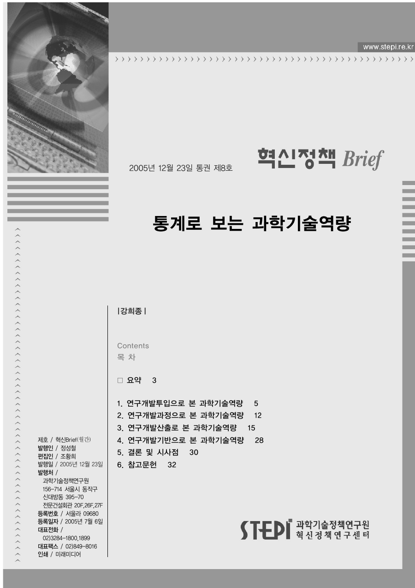

3. Markdown 변환 결과
 2005년 12월 23일 통권 제8호 # 통계로 보는 과학기술역량 |강희종 | Contents 목 차 □ 요약 3 - 1. 연구개발투입으로 본 과학기술역량 5 - 2. 연구개발과정으로 본 과학기술역량 12 - 3. 연구개발산출로 본 과학기술역량 15 - 4. 연구개발기반으로 본 과학기술역량 28 - 5. 결론 및 시사점 30 - 6. 참고문헌 32 제호 / 혁신Brief(월간) 발행인 / 정성철 편집인 / 조황희 발행일 / 2005년 12월 23일 발행처 / 과학기술정책연구원 156-714 서울시 동작구 신대방동 395-70 전문건설회관 20F,26F,27F 등록번호 / 서울라 09680 등록일자 / 2005년 7월 6일 대표전화 / 02)3284-1800,1899 대표팩스 / 02)849-8016 인쇄 / 미래미디어
p.12
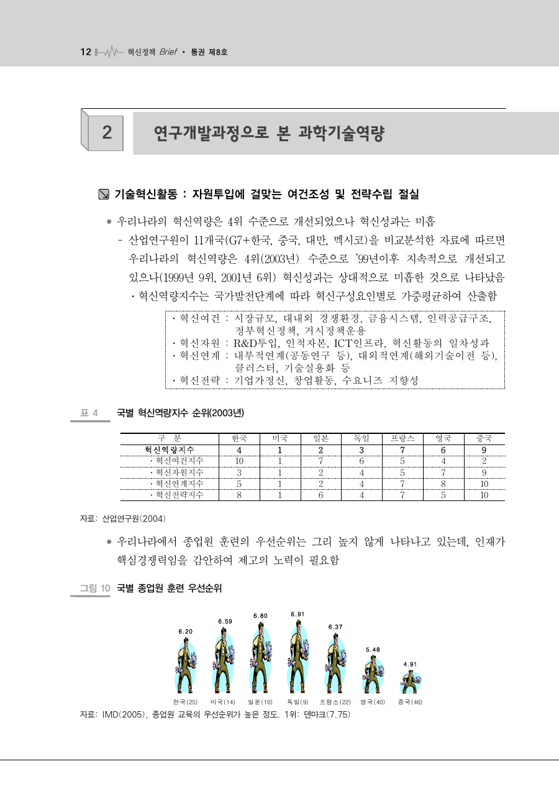
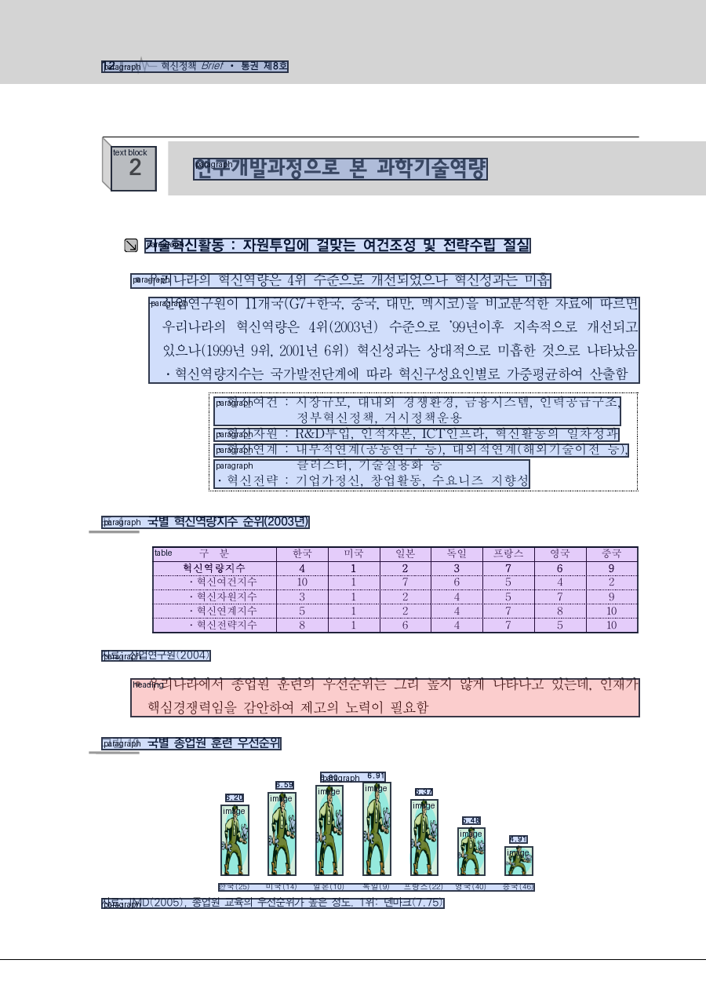
3. Markdown 변환 결과
12 혁신정책 Brief ∙ 통권 제8호 |2| |---| 연구개발과정으로 본 과학기술역량 기술혁신활동 : 자원투입에 걸맞는 여건조성 및 전략수립 절실 •우리나라의 혁신역량은 4위 수준으로 개선되었으나 혁신성과는 미흡 - 산업연구원이 11개국(G7+한국, 중국, 대만, 멕시코)을 비교분석한 자료에 따르면 우리나라의 혁신역량은 4위(2003년) 수준으로 ’99년이후 지속적으로 개선되고 있으나(1999년 9위, 2001년 6위) 혁신성과는 상대적으로 미흡한 것으로 나타났음 ․혁신역량지수는 국가발전단계에 따라 혁신구성요인별로 가중평균하여 산출함 ․혁신여건 : 시장규모, 대내외 경쟁환경, 금융시스템, 인력공급구조, 정부혁신정책, 거시정책운용 ․혁신자원 : R&D투입, 인적자본, ICT인프라, 혁신활동의 일차성과 ․혁신연계 : 내부적연계(공동연구 등), 대외적연계(해외기술이전 등), 클러스터, 기술실용화 등 ․혁신전략 : 기업가정신, 창업활동, 수요니즈 지향성 표 4 국별 혁신역량지수 순위(2003년) |구 분|한국|미국|일본|독일|프랑스|영국|중국| |---|---|---|---|---|---|---|---| |혁신역량지수<br><br>․혁신여건지수 ․혁신자원지수 ․혁신연계지수 ․혁신전략지수|4 10<br><br>3<br><br>5 8<br>|1 1 1 1 1|2 7 2 2 6|3 6<br>4 4 4<br>|7 5 5 7 7|6<br><br>4<br><br>7 8<br><br>5<br><br><br>|9 2<br><br>9<br>10<br><br><br>10<br>| 자료: 산업연구원(2004) ## •우리나라에서 종업원 훈련의 우선순위는 그리 높지 않게 나타나고 있는데, 인재가 핵심경쟁력임을 감안하여 제고의 노력이 필요함 그림 10 국별 종업원 훈련 우선순위 6.80 6.91 6.59   6.37  6.20   5.48  4.91  한국(25) 미국(14) 일본(10) 독일(9) 프랑스(22) 영국(40) 중국(46) 자료: IMD(2005), 종업원 교육의 우선순위가 높은 정도. 1위: 덴마크(7.75)
p.24
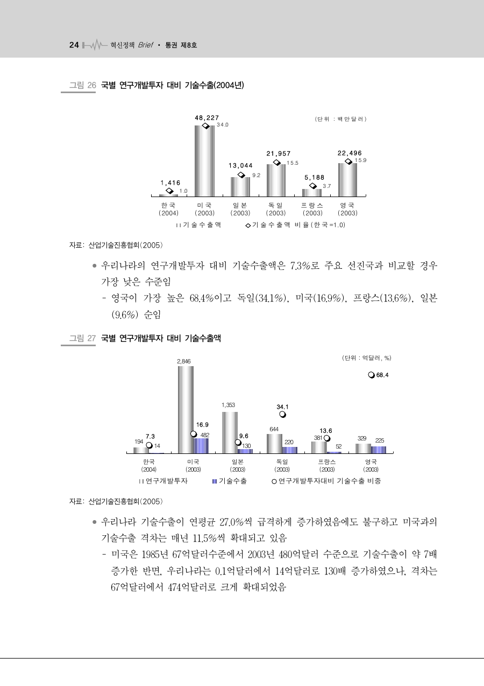
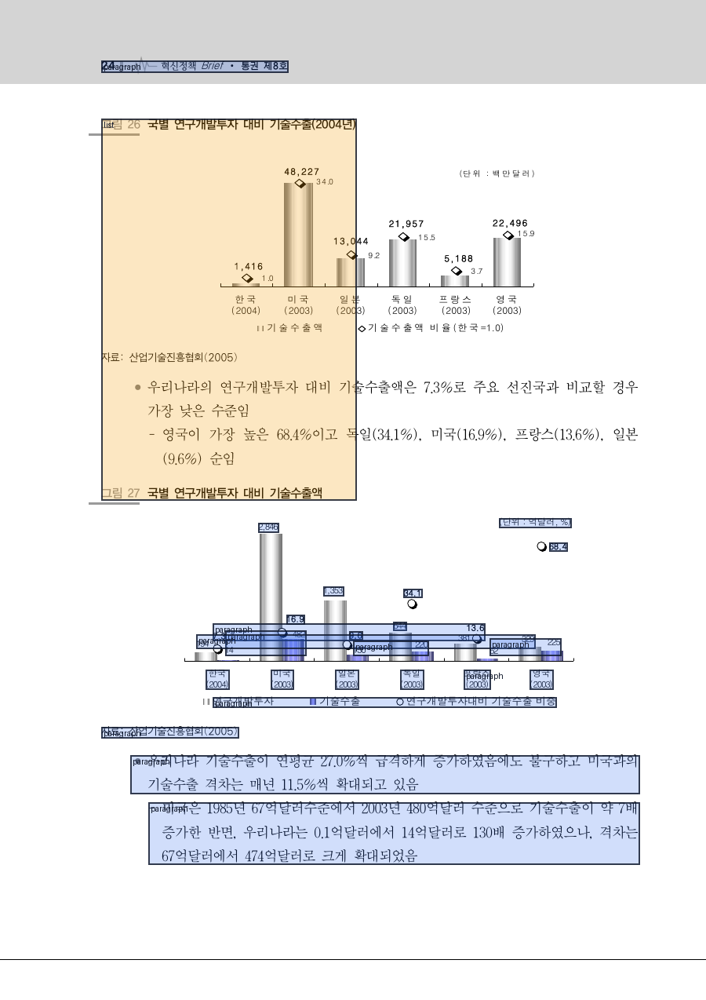
3. Markdown 변환 결과
24 혁신정책 Brief ∙ 통권 제8호 - 그림 26 국별 연구개발투자 대비 기술수출(2004년) (단 위 : 백 만 달 러 ) 1,416 22,496 5,188 21,957 13,044 48,227 15.9 3.7 15.5 9.2 34.0 1.0 한 국 (2004) 미 국 (2003) 일 본 (2003) 독 일 (2003) 프 랑 스 (2003) 영 국 (2003) 기 술 수 출 액 기 술 수 출 액 비 율 (한 국 =1.0) 자료: 산업기술진흥협회(2005) •우리나라의 연구개발투자 대비 기술수출액은 7.3%로 주요 선진국과 비교할 경우 가장 낮은 수준임 - 영국이 가장 높은 68.4%이고 독일(34.1%), 미국(16.9%), 프랑스(13.6%), 일본 (9.6%) 순임 - 그림 27 국별 연구개발투자 대비 기술수출액 2,846 (단위 : 억달러, %) 68.4 1,353 34.1 16.9 644 13.6 7.3 482 14 9.6 194 381 329 225 52 220 130 한국 (2004) 미국 (2003) 일본 (2003) 독일 (2003) 프랑스 (2003) 영국 (2003) 연구개발투자 기술수출 연구개발투자대비 기술수출 비중 자료: 산업기술진흥협회(2005) •우리나라 기술수출이 연평균 27.0%씩 급격하게 증가하였음에도 불구하고 미국과의 기술수출 격차는 매년 11.5%씩 확대되고 있음 - 미국은 1985년 67억달러수준에서 2003년 480억달러 수준으로 기술수출이 약 7배 증가한 반면, 우리나라는 0.1억달러에서 14억달러로 130배 증가하였으나, 격차는 67억달러에서 474억달러로 크게 확대되었음
문서유형 대표
15. Working Paper · 2008
p.1
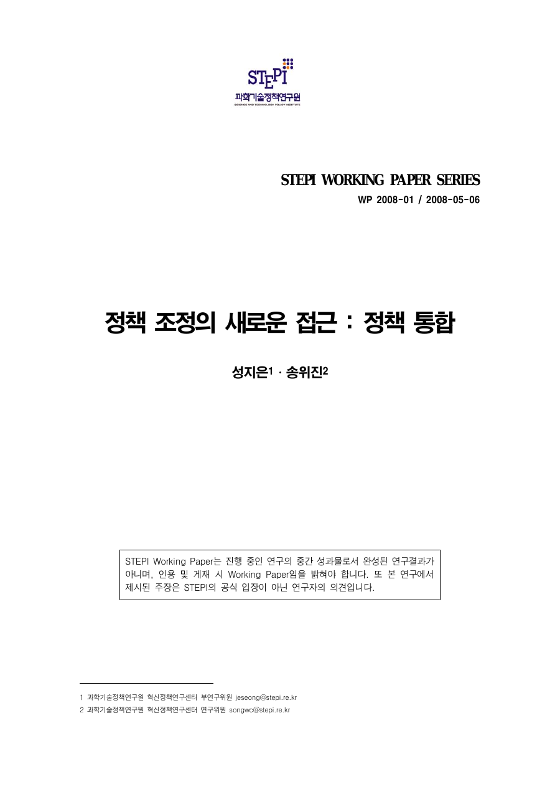
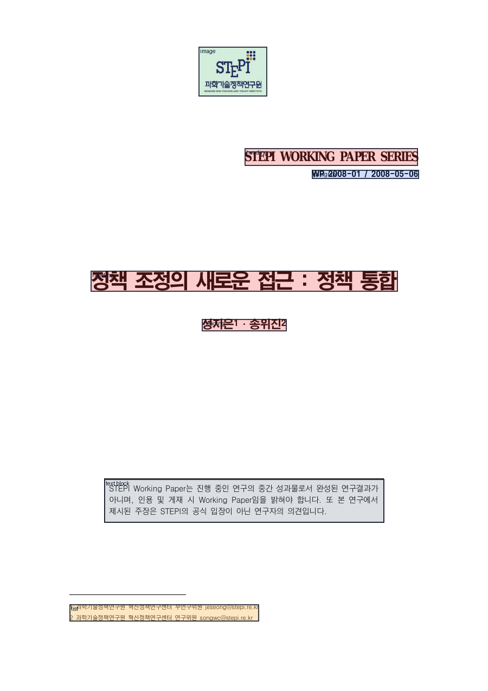
3. Markdown 변환 결과
 ## STEPI WORKING PAPER SERIES WP 2008-01 / 2008-05-06 # 정책 조정의 새로운 접근 : 정책 통합 ### 성지은1․송위진2 |STEPI Working Paper는 진행 중인 연구의 중간 성과물로서 완성된 연구결과가 아니며, 인용 및 게재 시 Working Paper임을 밝혀야 합니다. 또 본 연구에서 제시된 주장은 STEPI의 공식 입장이 아닌 연구자의 의견입니다.| |---| - 1 과학기술정책연구원 혁신정책연구센터 부연구위원 jeseong@stepi.re.kr - 2 과학기술정책연구원 혁신정책연구센터 연구위원 songwc@stepi.re.kr
p.6
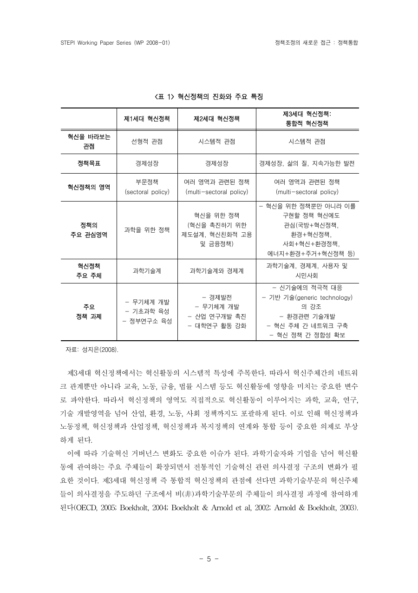
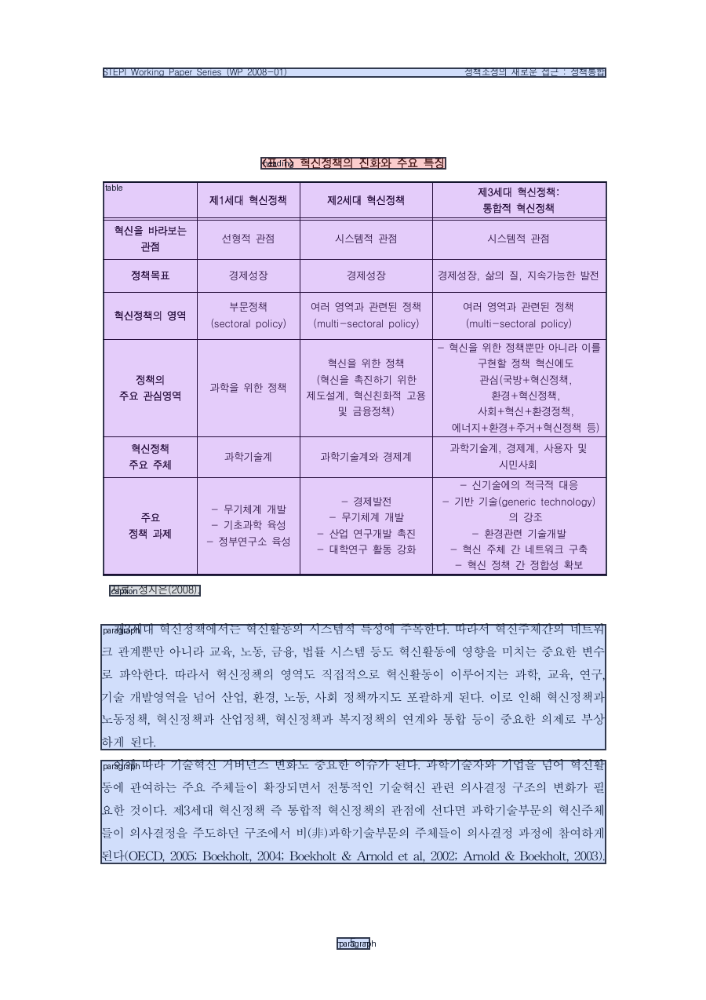
3. Markdown 변환 결과
STEPI Working Paper Series (WP 2008-01) 정책조정의 새로운 접근 : 정책통합 ##### <표 1> 혁신정책의 진화와 주요 특징 | |제1세대 혁신정책|제2세대 혁신정책|제3세대 혁신정책: 통합적 혁신정책| |---|---|---|---| |혁신을 바라보는 관점|선형적 관점|시스템적 관점|시스템적 관점| |정책목표|경제성장|경제성장|경제성장, 삶의 질, 지속가능한 발전| |혁신정책의 영역|부문정책 (sectoral policy)|여러 영역과 관련된 정책 (multi-sectoral policy)|여러 영역과 관련된 정책 (multi-sectoral policy)| |정책의 주요 관심영역|과학을 위한 정책|혁신을 위한 정책 (혁신을 촉진하기 위한 제도설계, 혁신친화적 고용 및 금융정책)|- 혁신을 위한 정책뿐만 아니라 이를<br><br>구현할 정책 혁신에도 관심(국방+혁신정책, 환경+혁신정책, 사회+혁신+환경정책, 에너지+환경+주거+혁신정책 등)| |혁신정책 주요 주체|과학기술계|과학기술계와 경제계|과학기술계, 경제계, 사용자 및 시민사회| |주요 정책 과제|- 무기체계 개발<br>- 기초과학 육성<br>- 정부연구소 육성<br>|- 경제발전<br>- 무기체계 개발<br>- 산업 연구개발 촉진<br>- 대학연구 활동 강화<br>|- 신기술에의 적극적 대응<br><br>- 기반 기술(generic technology) 의 강조<br><br>- 환경관련 기술개발<br><br>- 혁신 주체 간 네트워크 구축<br>- 혁신 정책 간 정합성 확보<br>| 자료: 성지은(2008). 제3세대 혁신정책에서는 혁신활동의 시스템적 특성에 주목한다. 따라서 혁신주체간의 네트워 크 관계뿐만 아니라 교육, 노동, 금융, 법률 시스템 등도 혁신활동에 영향을 미치는 중요한 변수 로 파악한다. 따라서 혁신정책의 영역도 직접적으로 혁신활동이 이루어지는 과학, 교육, 연구, 기술 개발영역을 넘어 산업, 환경, 노동, 사회 정책까지도 포괄하게 된다. 이로 인해 혁신정책과 노동정책, 혁신정책과 산업정책, 혁신정책과 복지정책의 연계와 통합 등이 중요한 의제로 부상 하게 된다. 이에 따라 기술혁신 거버넌스 변화도 중요한 이슈가 된다. 과학기술자와 기업을 넘어 혁신활 동에 관여하는 주요 주체들이 확장되면서 전통적인 기술혁신 관련 의사결정 구조의 변화가 필 요한 것이다. 제3세대 혁신정책 즉 통합적 혁신정책의 관점에 선다면 과학기술부문의 혁신주체 들이 의사결정을 주도하던 구조에서 비(非)과학기술부문의 주체들이 의사결정 과정에 참여하게 된다(OECD, 2005; Boekholt, 2004; Boekholt & Arnold et al, 2002; Arnold & Boekholt, 2003). - 5 -
p.13
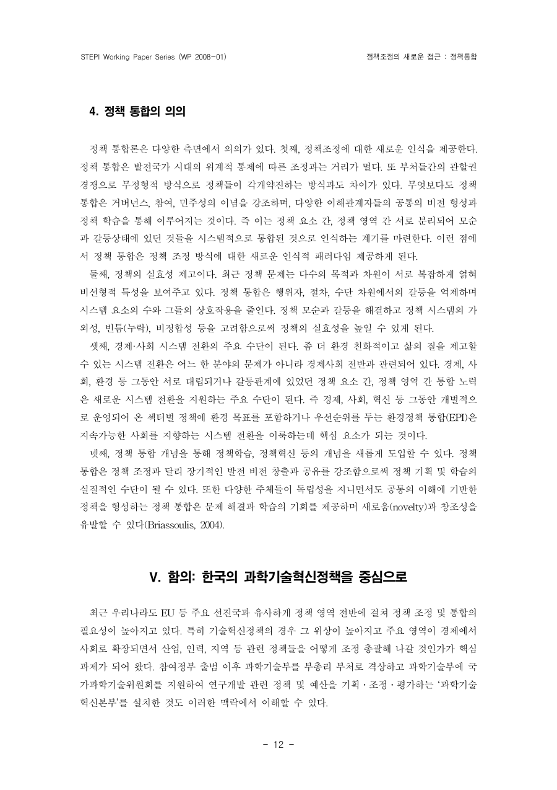
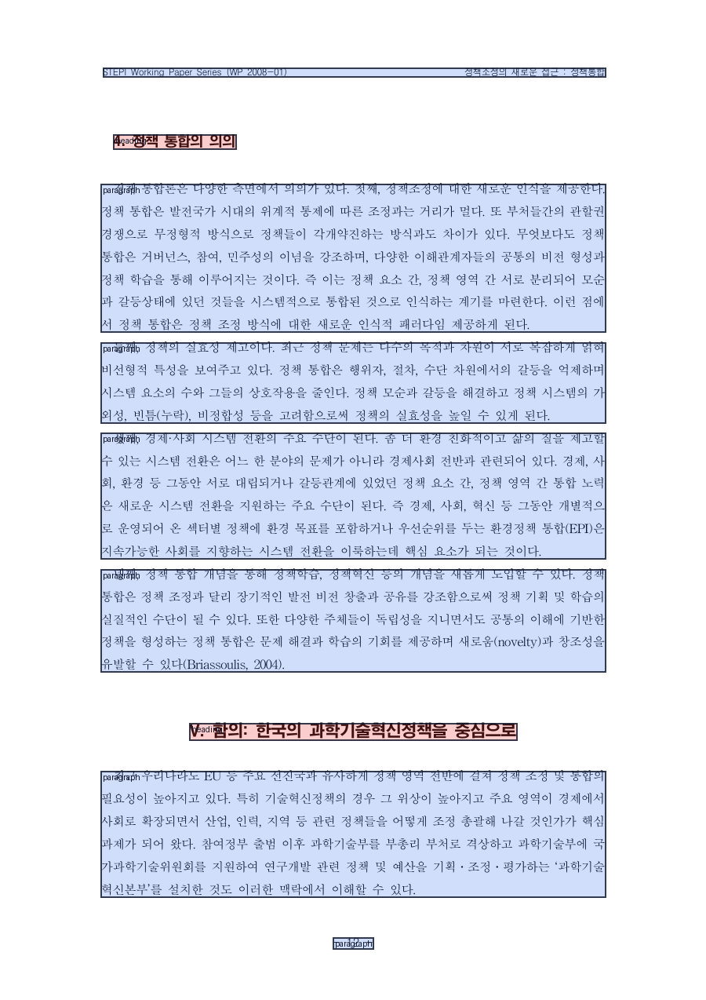
3. Markdown 변환 결과
STEPI Working Paper Series (WP 2008-01) 정책조정의 새로운 접근 : 정책통합 #### 4. 정책 통합의 의의 정책 통합론은 다양한 측면에서 의의가 있다. 첫째, 정책조정에 대한 새로운 인식을 제공한다. 정책 통합은 발전국가 시대의 위계적 통제에 따른 조정과는 거리가 멀다. 또 부처들간의 관할권 경쟁으로 무정형적 방식으로 정책들이 각개약진하는 방식과도 차이가 있다. 무엇보다도 정책 통합은 거버넌스, 참여, 민주성의 이념을 강조하며, 다양한 이해관계자들의 공통의 비전 형성과 정책 학습을 통해 이루어지는 것이다. 즉 이는 정책 요소 간, 정책 영역 간 서로 분리되어 모순 과 갈등상태에 있던 것들을 시스템적으로 통합된 것으로 인식하는 계기를 마련한다. 이런 점에 서 정책 통합은 정책 조정 방식에 대한 새로운 인식적 패러다임 제공하게 된다. 둘째, 정책의 실효성 제고이다. 최근 정책 문제는 다수의 목적과 차원이 서로 복잡하게 얽혀 비선형적 특성을 보여주고 있다. 정책 통합은 행위자, 절차, 수단 차원에서의 갈등을 억제하며 시스템 요소의 수와 그들의 상호작용을 줄인다. 정책 모순과 갈등을 해결하고 정책 시스템의 가 외성, 빈틈(누락), 비정합성 등을 고려함으로써 정책의 실효성을 높일 수 있게 된다. 셋째, 경제·사회 시스템 전환의 주요 수단이 된다. 좀 더 환경 친화적이고 삶의 질을 제고할 수 있는 시스템 전환은 어느 한 분야의 문제가 아니라 경제사회 전반과 관련되어 있다. 경제, 사 회, 환경 등 그동안 서로 대립되거나 갈등관계에 있었던 정책 요소 간, 정책 영역 간 통합 노력 은 새로운 시스템 전환을 지원하는 주요 수단이 된다. 즉 경제, 사회, 혁신 등 그동안 개별적으 로 운영되어 온 섹터별 정책에 환경 목표를 포함하거나 우선순위를 두는 환경정책 통합(EPI)은 지속가능한 사회를 지향하는 시스템 전환을 이룩하는데 핵심 요소가 되는 것이다. 넷째, 정책 통합 개념을 통해 정책학습, 정책혁신 등의 개념을 새롭게 도입할 수 있다. 정책 통합은 정책 조정과 달리 장기적인 발전 비전 창출과 공유를 강조함으로써 정책 기획 및 학습의 실질적인 수단이 될 수 있다. 또한 다양한 주체들이 독립성을 지니면서도 공통의 이해에 기반한 정책을 형성하는 정책 통합은 문제 해결과 학습의 기회를 제공하며 새로움(novelty)과 창조성을 유발할 수 있다(Briassoulis, 2004). ### V. 함의: 한국의 과학기술혁신정책을 중심으로 최근 우리나라도 EU 등 주요 선진국과 유사하게 정책 영역 전반에 걸쳐 정책 조정 및 통합의 필요성이 높아지고 있다. 특히 기술혁신정책의 경우 그 위상이 높아지고 주요 영역이 경제에서 사회로 확장되면서 산업, 인력, 지역 등 관련 정책들을 어떻게 조정 총괄해 나갈 것인가가 핵심 과제가 되어 왔다. 참여정부 출범 이후 과학기술부를 부총리 부처로 격상하고 과학기술부에 국 가과학기술위원회를 지원하여 연구개발 관련 정책 및 예산을 기획․조정․평가하는 ‘과학기술 혁신본부’를 설치한 것도 이러한 맥락에서 이해할 수 있다. - 12 -
압축파일 내 문서
1. 정책연구 · 2008
p.1
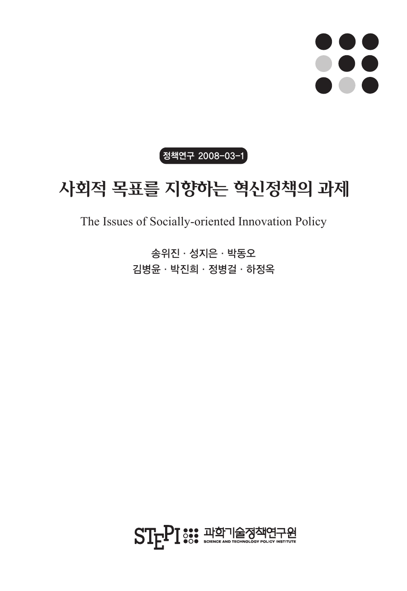
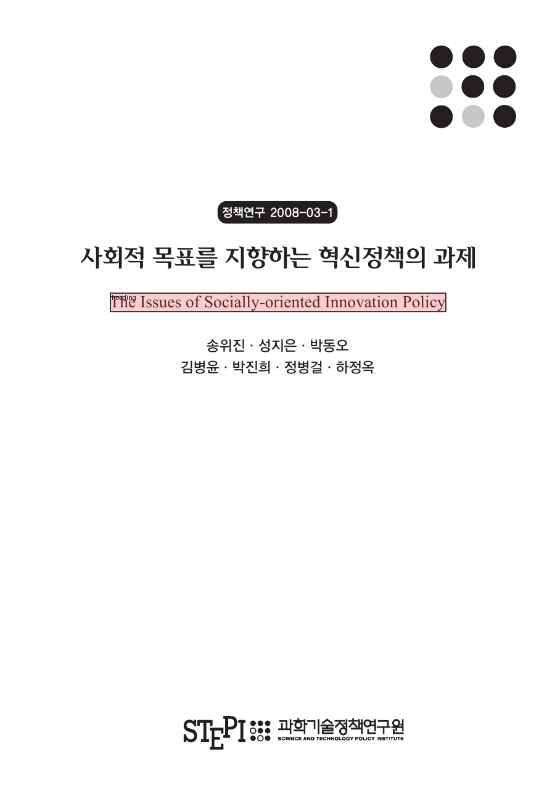
3. Markdown 변환 결과
# The Issues of Socially-oriented Innovation Policy
p.128
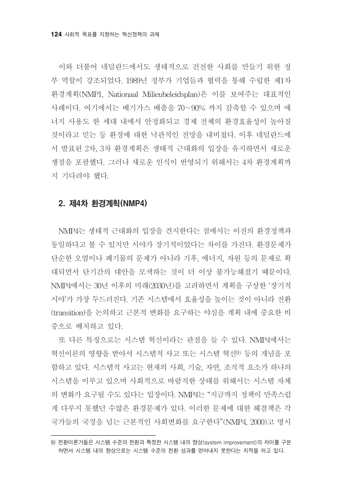
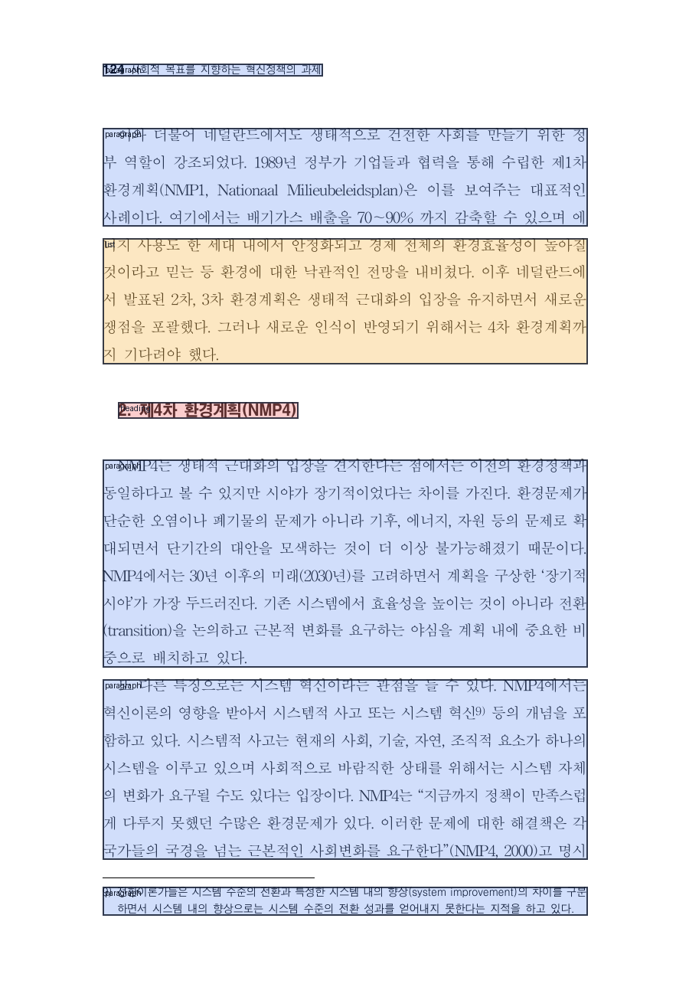
3. Markdown 변환 결과
124 사회적 목표를 지향하는 혁신정책의 과제 이와 더불어 네덜란드에서도 생태적으로 건전한 사회를 만들기 위한 정 부 역할이 강조되었다. 1989년 정부가 기업들과 협력을 통해 수립한 제1차 환경계획(NMP1, Nationaal Milieubeleidsplan)은 이를 보여주는 대표적인 사례이다. 여기에서는 배기가스 배출을 70～90% 까지 감축할 수 있으며 에 - 너지 사용도 한 세대 내에서 안정화되고 경제 전체의 환경효율성이 높아질 것이라고 믿는 등 환경에 대한 낙관적인 전망을 내비쳤다. 이후 네덜란드에 - 서 발표된 2차, 3차 환경계획은 생태적 근대화의 입장을 유지하면서 새로운 쟁점을 포괄했다. 그러나 새로운 인식이 반영되기 위해서는 4차 환경계획까 지 기다려야 했다. ## 2. 제4차 환경계획(NMP4) NMP4는 생태적 근대화의 입장을 견지한다는 점에서는 이전의 환경정책과 동일하다고 볼 수 있지만 시야가 장기적이었다는 차이를 가진다. 환경문제가 단순한 오염이나 폐기물의 문제가 아니라 기후, 에너지, 자원 등의 문제로 확 대되면서 단기간의 대안을 모색하는 것이 더 이상 불가능해졌기 때문이다. NMP4에서는 30년 이후의 미래(2030년)를 고려하면서 계획을 구상한 ‘장기적 시야’가 가장 두드러진다. 기존 시스템에서 효율성을 높이는 것이 아니라 전환 (transition)을 논의하고 근본적 변화를 요구하는 야심을 계획 내에 중요한 비 중으로 배치하고 있다. 또 다른 특징으로는 시스템 혁신이라는 관점을 들 수 있다. NMP4에서는 혁신이론의 영향을 받아서 시스템적 사고 또는 시스템 혁신9) 등의 개념을 포 함하고 있다. 시스템적 사고는 현재의 사회, 기술, 자연, 조직적 요소가 하나의 시스템을 이루고 있으며 사회적으로 바람직한 상태를 위해서는 시스템 자체 의 변화가 요구될 수도 있다는 입장이다. NMP4는 “지금까지 정책이 만족스럽 게 다루지 못했던 수많은 환경문제가 있다. 이러한 문제에 대한 해결책은 각 국가들의 국경을 넘는 근본적인 사회변화를 요구한다”(NMP4, 2000)고 명시 9) 전환이론가들은 시스템 수준의 전환과 특정한 시스템 내의 향상(system improvement)의 차이를 구분 하면서 시스템 내의 향상으로는 시스템 수준의 전환 성과를 얻어내지 못한다는 지적을 하고 있다.
p.255
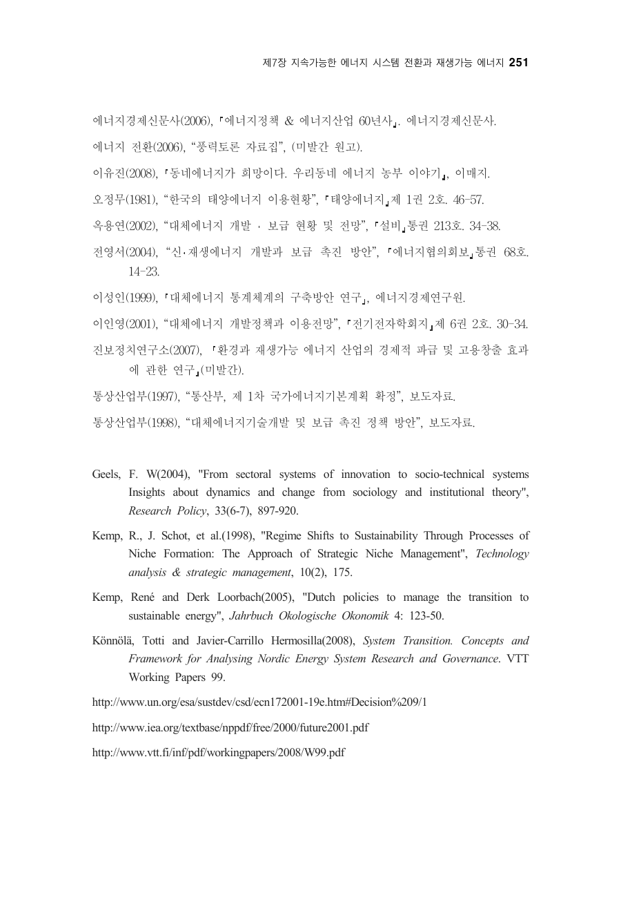
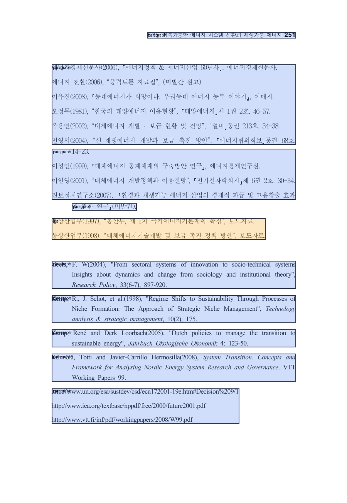
3. Markdown 변환 결과
제7장 지속가능한 에너지 시스템 전환과 재생가능 에너지 251 에너지경제신문사(2006), ｢에너지정책 & 에너지산업 60년사｣. 에너지경제신문사. 에너지 전환(2006), “풍력토론 자료집”, (미발간 원고). 이유진(2008), ｢동네에너지가 희망이다. 우리동네 에너지 농부 이야기｣, 이매지. 오정무(1981), “한국의 태양에너지 이용현황”, ｢태양에너지｣제 1권 2호. 46-57. 옥용연(2002), “대체에너지 개발 ‧ 보급 현황 및 전망”, ｢설비｣통권 213호. 34-38. 전영서(2004), “신‧재생에너지 개발과 보급 촉진 방안”, ｢에너지협의회보｣통권 68호. 14-23. 이성인(1999), ｢대체에너지 통계체계의 구축방안 연구｣, 에너지경제연구원. 이인영(2001), “대체에너지 개발정책과 이용전망”, ｢전기전자학회지｣제 6권 2호. 30-34. 진보정치연구소(2007), ｢환경과 재생가능 에너지 산업의 경제적 파급 및 고용창출 효과 에 관한 연구｣(미발간). - 통상산업부(1997), “통산부, 제 1차 국가에너지기본계획 확정”, 보도자료. - 통상산업부(1998), “대체에너지기술개발 및 보급 촉진 정책 방안”, 보도자료. Geels, F. W(2004), "From sectoral systems of innovation to socio-technical systems Insights about dynamics and change from sociology and institutional theory", Research Policy, 33(6-7), 897-920. Kemp, R., J. Schot, et al.(1998), "Regime Shifts to Sustainability Through Processes of Niche Formation: The Approach of Strategic Niche Management", Technology analysis & strategic management, 10(2), 175. Kemp, René and Derk Loorbach(2005), "Dutch policies to manage the transition to sustainable energy", Jahrbuch Okologische Okonomik 4: 123-50. Könnölä, Totti and Javier-Carrillo Hermosilla(2008), System Transition. Concepts and Framework for Analysing Nordic Energy System Research and Governance. VTT Working Papers 99. http://www.un.org/esa/sustdev/csd/ecn172001-19e.htm#Decision%209/1 http://www.iea.org/textbase/nppdf/free/2000/future2001.pdf http://www.vtt.fi/inf/pdf/workingpapers/2008/W99.pdf